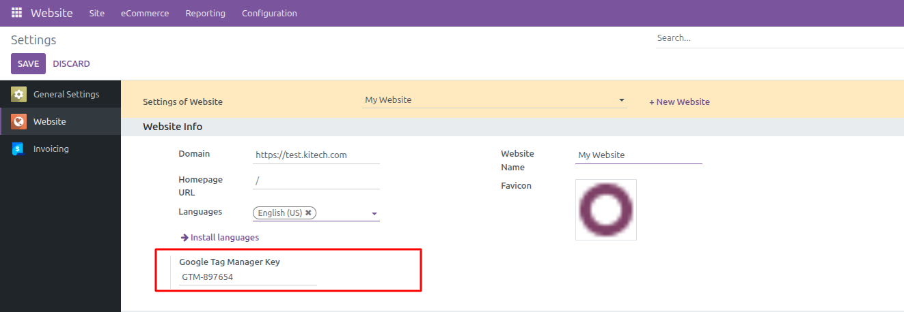
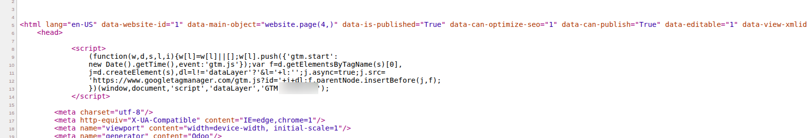
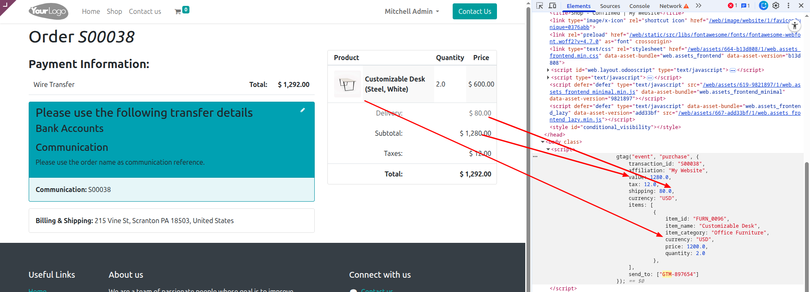

This module connects your Odoo website with Google Tag Manager by injecting your GTM container on public pages. You can manage marketing and analytics tags centrally from GTM without touching Odoo templates or custom code.
The Google Tag Manager (GTM) module adds your GTM container to the Odoo website layout and sends structured ecommerce data for orders placed through the shop. Once configured, you can create and publish tags from the GTM interface without editing Odoo views.
It is designed for digital marketers, agencies, and Odoo implementers who want a flexible way to deploy tracking pixels, analytics tags, and other marketing scripts while keeping the Odoo website clean and maintainable.
Add your Google Tag Manager container ID once in Website settings and let the module include the script on all public website pages.
Automatically pushes purchase data (order, amounts, currency and items) on the confirmation page so that you can build conversion tracking in GTM.
Works with Odoo multi‑website. Each website can use its own GTM container ID if needed.
The integration extends the standard website layout, so you do not have to modify theme templates or add custom code snippets.
GTM-XXXXXXX).
After configuration, the module automatically injects the standard Google Tag Manager code
into the website layout. The GTM script and the corresponding noscript iframe are
included on all public pages, following Google’s recommended placement.

Use these checks to confirm that your Google Tag Manager container and purchase events are working as expected:
purchase event is received in GTM with order and item details.
Khichdi InfoTech helps businesses get more value from Odoo with implementation, customization and long‑term support. We focus on practical, maintainable solutions that fit your processes.
If you need assistance with this module, new features, or other Odoo projects, our team is ready to help.
+91 99747 68675
Sales: contact@khichdiinfotech.com
Support: support@khichdiinfotech.com